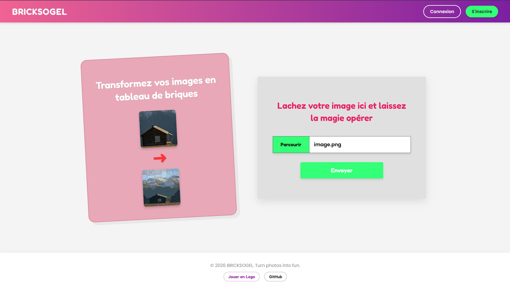
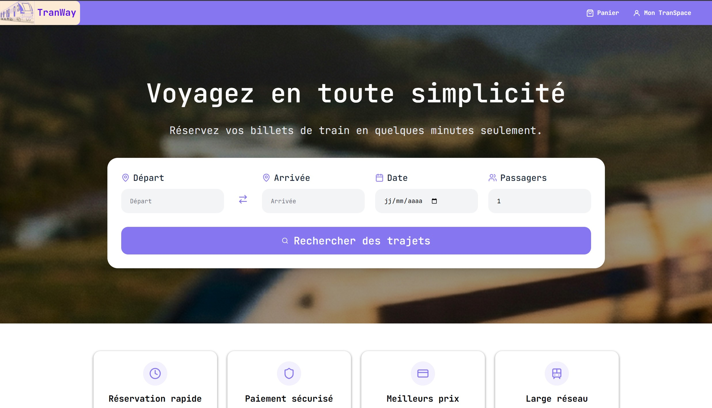

Bienvenue sur mon portfolio
Je suis Clara Drieux, étudiante en deuxième année de BUT informatique à l'IUT Gustave Eiffel.
Mes projets
SAE Tableau Lego

Création d'un site en HTML/CSS/JS/PHP transformant une image en tableau de briques en passant
par un algorithme de pavage en C.
Gestion des données avec MySQL et MongoDB. Relations des parties en Java. Deux jeux créer en
React/TypeScript pour gagner des points de réductions.
Compétences utilisées
Réaliser (Partir des exigences et aller jusqu'à une application complète)
Optimiser (Sélectionner les algorithmes adéquats pour répondre à un
problème donné)
Gérer (Optimiser une base de données, intéragir avec une application et
mettre en oeuvre la
sécurité)
Conduire (Appliquer une démarche de suivi de projet en fonction des besoins
métiers des clients et des utilisateurs)
Collaborer (Situer son rôle et ses missions au sein d'une équipe
informatique)
Projet TranPay
Création d'un site en HTML/CSS/PHP pour la gestion d'une banque pour une entreprise.
Gestion des données avec PostgreSQL et relation avec le site via une api.
Compétences utilisées
Réaliser (Partir des exigences et aller jusqu'à une application complète)
Gérer (Optimiser une base de données, intéragir avec une application et
mettre en oeuvre la
sécurité)
Conduire (Appliquer une démarche de suivi de projet en fonction des besoins
métiers des clients et des utilisateurs)
Collaborer (Situer son rôle et ses missions au sein d'une équipe
informatique)
Projet TranWay

Compétences utilisées
Réaliser (Partir des exigences et aller jusqu'à une application complète)
Gérer (Optimiser une base de données, intéragir avec une application et
mettre en oeuvre la
sécurité)
Conduire (Appliquer une démarche de suivi de projet en fonction des besoins
métiers des clients et des utilisateurs)
Collaborer (Situer son rôle et ses missions au sein d'une équipe
informatique)
TP Set Lego
Compétences utilisées
Réaliser (Partir des exigences et aller jusqu'à une application complète)
Optimiser (Sélectionner les algorithmes adéquats pour répondre à un
problème donné)
Gérer (Optimiser une base de données, intéragir avec une application et
mettre en oeuvre la sécurité)
Conduire (Appliquer une démarche de suivi de projet en fonction des besoins
métiers des clients et des utilisateurs)
Mes compétences
Mes connaissances
Langages de programmations
- Web : HTML / CSS (BootStrap) / JS (TypeScript / REACT / Node) / PHP
- Logiciels : Python / Java / C
- Base de données : SQL / PostgreSQL / NoSQL
Logiciels de programmations
- Web : VS Code / PhpStorm / XAMPP
- Logiciels : VS Code / Eclipse / IntelliJ IDEA
- Base de données : MySQL / pgAdmin / MongoDB
Logiciels annexes
- Maquettage : Figma / Scene Builder
- Documentation : Google drive
- Versionnage : Git / GitHub
- Organisation : Trello / Jira / GanttProject
Autres connaissances
- Méthodes de travail : Agile / Scrum / Kanban / Cycle en V
- Langues : anglais (B2) / Allemand (B1)
- Soft skills : travail en équipe / autonomie / organisation / créativité /
patience / soucieuse du détail
À propos
Mon portfolio me sert à évaluer mes connaissances et tenir un dossier permanents
de mes compétences et de mes projets.
Cela fait maintenant deux ans que je suis dans le domaine de l'informatique,
et j'ai pu acquérir de nombreuses compétences et connaissances grâce à mes projets
universitaires.
Après mon BUT, je souhaiterais poursuivre mes études dans le domaine du jeux vidéo.
Je voudrais me diriger dans ce domaine car je veux continuer l'informatique mais en y ajoutant
plus de créativité, et je suis passionnée de jeux vidéo depuis que je suis petite.